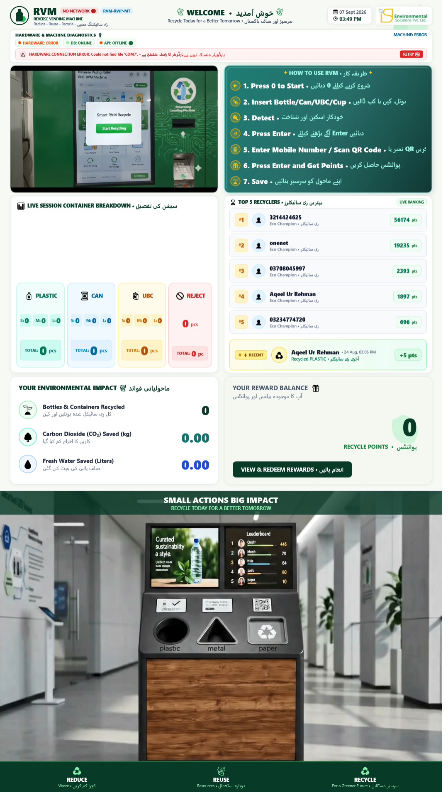
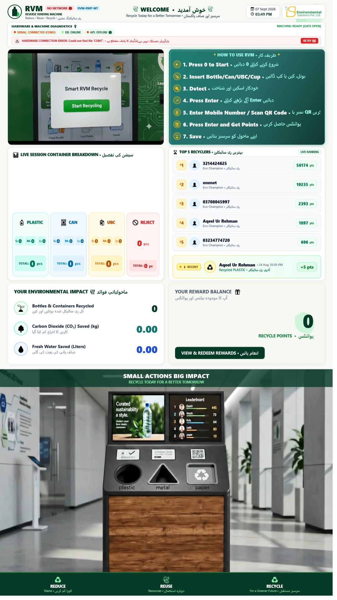
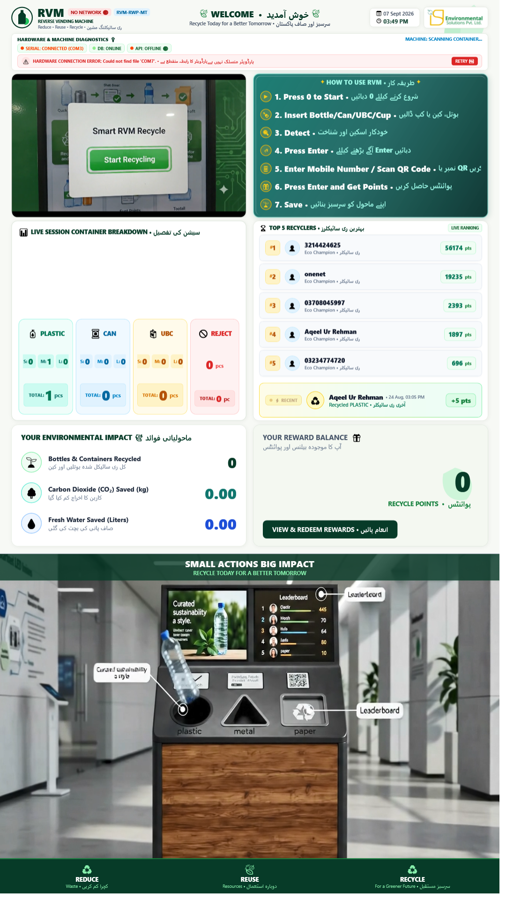
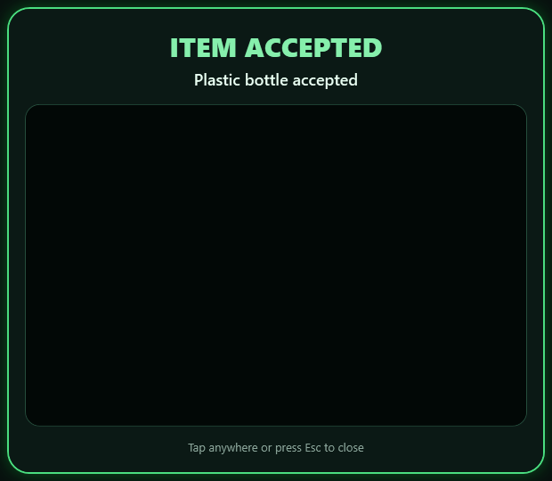
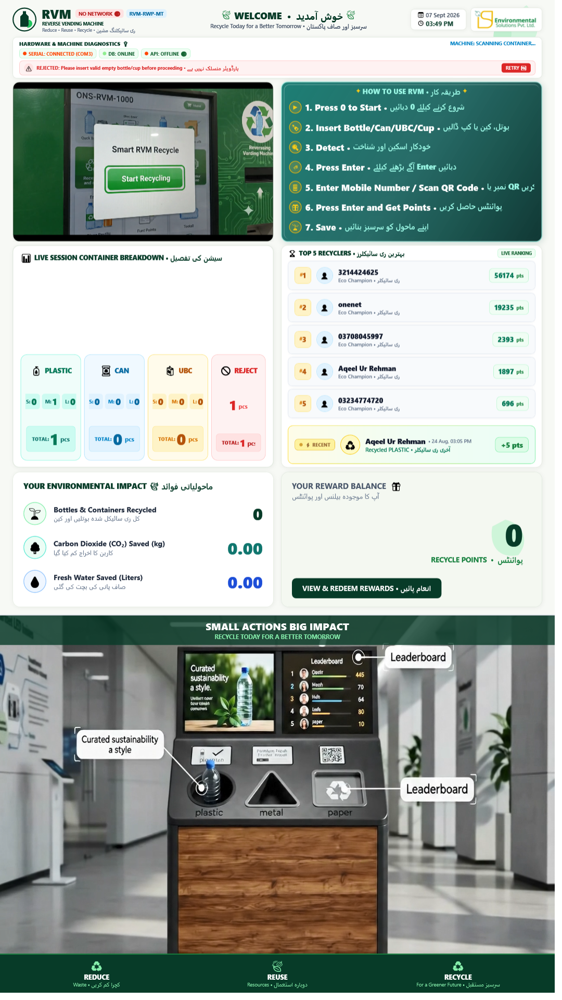
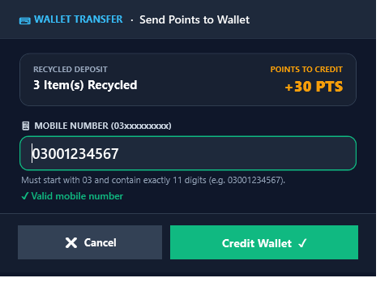

Manufactured by ISP Environmental Solutions Pvt. Ltd. • Smart Recycling Systems

ISP Environmental Solutions Pvt. Ltd.
Manufacturer • Smart Recycling Systems
Public RVM
Operator & User Manual
Safe daily operation, public recycling workflow, rewards, screen guidance and first-response troubleshooting
Manufactured by: ISP Environmental Solutions Pvt. Ltd.
Product family: ISP Public Reverse Vending Machine (RVM)
Application: RVMDesktopApp
Environment: Shopping malls, transit stations, commercial hubs and municipal parks
Materials: Plastic bottles, beverage cans, UBC/Tetra Pak cartons and rejected items
Edition: 1 October 2026
1. Purpose and safety
The public RVM accepts eligible empty containers, validates them automatically, updates the live session breakdown and awards points through the supported mobile/reward flow.
Safety: Never place hands inside the intake, force an item through a gate, insert liquids, glass, batteries, pressurized containers, sharp objects or general waste. If the machine reports a blockage or unavailable compartment, stop public use and contact the assigned operator.
People and responsibilities
| Role | Normal responsibility |
|---|
| Public user | Follow screen prompts, insert one eligible item at a time, claim rewards and remove rejected items. |
| Site operator | Inspect cleanliness and safety, confirm normal status, replace full-bin liners using approved procedures and report faults. |
| Technical support | Electrical, sensor, gate, serial, software and database maintenance. Not covered by this user manual. |
2. Know the main screen

Screen capture: RVM welcome dashboard. The diagnostic banner, instructions, session breakdown, leaderboard, environmental impact and reward balance are visible.
- Status area: Shows machine, hardware, database and API availability.
- Instruction area: Displays the current action and supporting video.
- Live breakdown: Counts plastic, cans, UBC and rejects by the configured size groups.
- Reward balance: Shows session points.
- Leaderboard: Displays current public rankings.
3. Accepted and prohibited items
| Category | Generally accepted | Do not insert |
|---|
| Plastic | Empty PET/HDPE bottles in supported sizes; cap and label rules follow the screen/site policy. | Liquid-filled, chemical, oily, heavily crushed or unrecognizable plastic. |
| Can | Empty beverage cans in supported sizes. | Aerosols, batteries, food tins with residue, sharp or heavily crushed metal. |
| UBC | Empty beverage cartons/Tetra Pak in supported sizes. | Wet, leaking, contaminated or flattened material the sensors cannot identify. |
| Reject | Items that fail material, size, safety or transit validation are returned/not credited. | Never reinsert repeatedly if the same clean eligible item is rejected. |
Preparation: Empty the container, remove straws and loose waste, keep its basic shape, and insert only one item when instructed.
4. Start a recycling session
Touchless start
Use the mobile application to scan the on-screen start QR code when available. Wait for the kiosk to confirm the session.
Keypad start
Press operational key 0 once. Wait for “Machine Started” or the insert instruction before approaching the intake.

Screen capture: active session waiting for one container.
5. Insert and validate items
- Confirm the machine is ready and the desired material is available.
- Insert one clean, empty container in the orientation demonstrated on screen.
- Release it; do not hold, rotate or push it during scanning.
- Wait while material and size sensors validate the item.
- Read the accepted or rejected result before inserting the next item.

Screen capture: detection and sizing in progress. Do not insert another item.
6. Accepted and rejected outcomes

Screen capture: accepted item, updated points and session count.
After acceptance, confirm the live material count and reward total increased. Insert another item only after the ready prompt returns.

Screen capture: rejection result.
For rejection, allow all movement to stop, remove the returned item if instructed, check that it is empty and eligible, and retry only once. Repeated rejection should be reported to the site operator.
7. Finish and claim rewards
- When all items are processed, press operational key Enter.
- Scan the displayed session QR using the supported mobile app, or enter the requested mobile number with the numeric keypad.
- Review the number before confirming with Enter.
- Wait for the success confirmation; do not walk away while the transaction is processing.

Screen capture: reward-claim/mobile-number stage.
Privacy: Enter contact information only on the official claim screen. Shield the keypad and never provide passwords, OTPs or wallet PINs to the kiosk or another person.
8. Rating and completion
If feedback is requested, select the displayed 1–5 rating using the touchscreen or numeric keypad and follow the confirmation prompt. Wait until the completion message appears and the kiosk returns to welcome mode.
9. Operator opening checklist
- Cabinet, screen, intake and return area are clean and undamaged.
- No hands, objects or liquid are inside the intake.
- Screen is full-screen and responsive.
- Machine/hardware status is ready; no persistent red fault banner.
- Correct machine identity and location are displayed.
- Network/API status is normal or approved offline mode is understood.
- All intended material compartments show available.
- Receipt/reward flow is available.
- One approved test item completes successfully where site procedure permits.
10. First-response troubleshooting
| Message/symptom | Safe response |
|---|
| Hardware offline/unplugged | Stop public deposits. Check only externally accessible power/cable indicators. Notify technical support; do not open energized panels. |
| Material unavailable/bin full | Block that material intake and arrange approved bin service. Never bypass a full-bin warning. |
| Item rejected | Remove it when safe, verify eligibility and retry once. Use another machine or contact the operator if it repeats. |
| Item stuck or gate does not complete | Do not reach inside or force the gate. Isolate the machine and call technical support. |
| Reward not received | Record machine ID, approximate time, mobile/account identifier and displayed points. Do not repeat the deposit solely to generate another credit. |
| Screen frozen | Keep users away from the intake and escalate through the approved support channel. |
11. Operator closing checklist
- Allow active users to complete their sessions.
- Confirm no item remains in the intake/return area.
- Record unresolved rejects, jams, reward cases and warning banners.
- Clean exterior surfaces with approved materials; never spray liquid into openings.
- Follow the site’s approved shutdown or always-on policy.
Escalate immediately: smoke, burning smell, exposed wiring, liquid ingress, unusual mechanical noise, repeated gate motion, damaged glass, vandalism or any risk to the public.